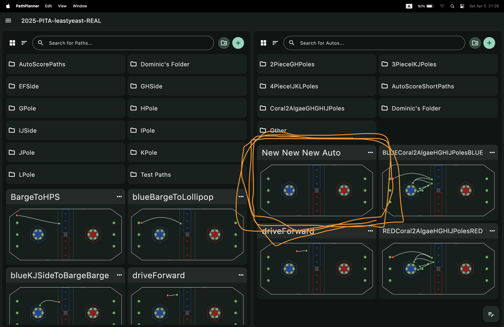
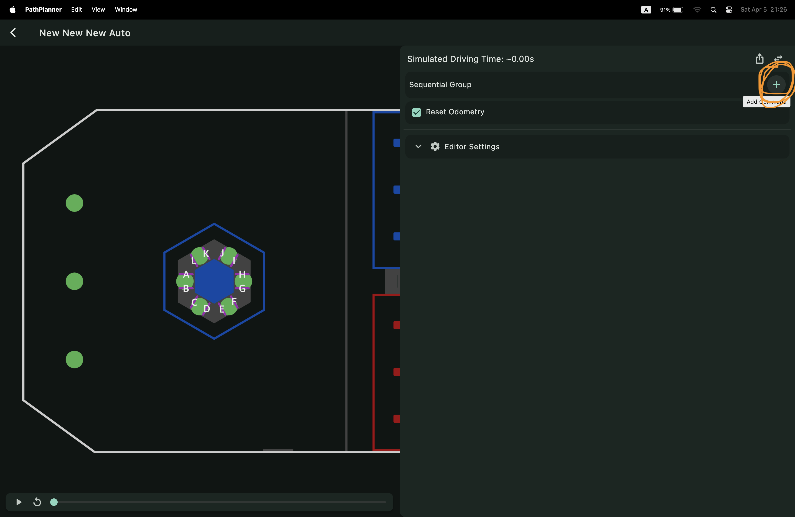
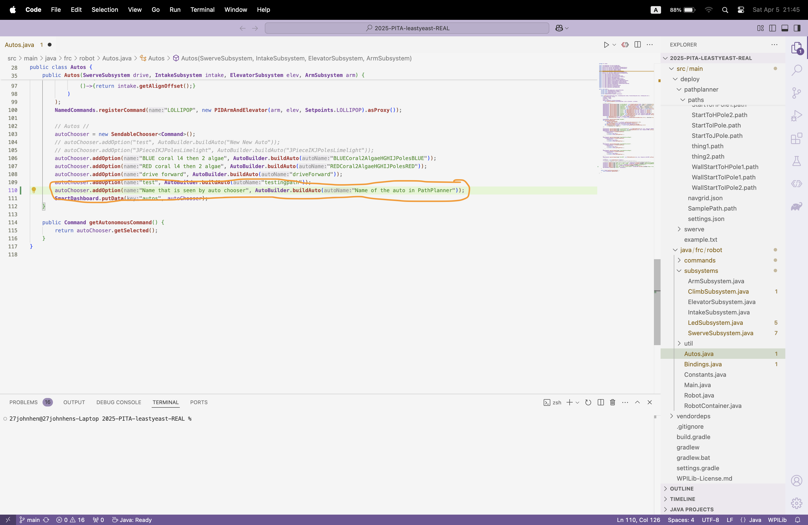

The purpose of this website is to make it easier to find programming-related things that are used or made by FRC 6045.
First, open .
Once it is open, click the '+' button in the top right corner.

A new auto will appear. If it is the first auto that has been made, it will be called 'New Auto'. Each subsequent auto that is made (if the first is still called 'New Auto') will add one 'New ' to the front of the title.
(In this example, somewhere within the folders are the autos 'New Auto' and 'New New Auto', so the newly created auto is called 'New New New Auto'.)

Click the '+' button in the top right corner to add commands, paths, and other things to your auto.

To change the name of the auto, double-click on the name.
An important thing to remember is that, after changing the data in any field of PathPlanner, it is necessary to press enter. Otherwise, after a time interval, it will reset to the previous data.

Open .
Add this line in your Autos.java file:
autoChooser.addOption('name', AutoBuilder.buildAuto('PathPlanner name'));
Replace 'name' with the text that you want to be seen in the auto chooser; replace 'PathPlanner name' with the name of the auto.
This line should be within
public class Autos {
public Autos(subsystems) {
line here
}
}
